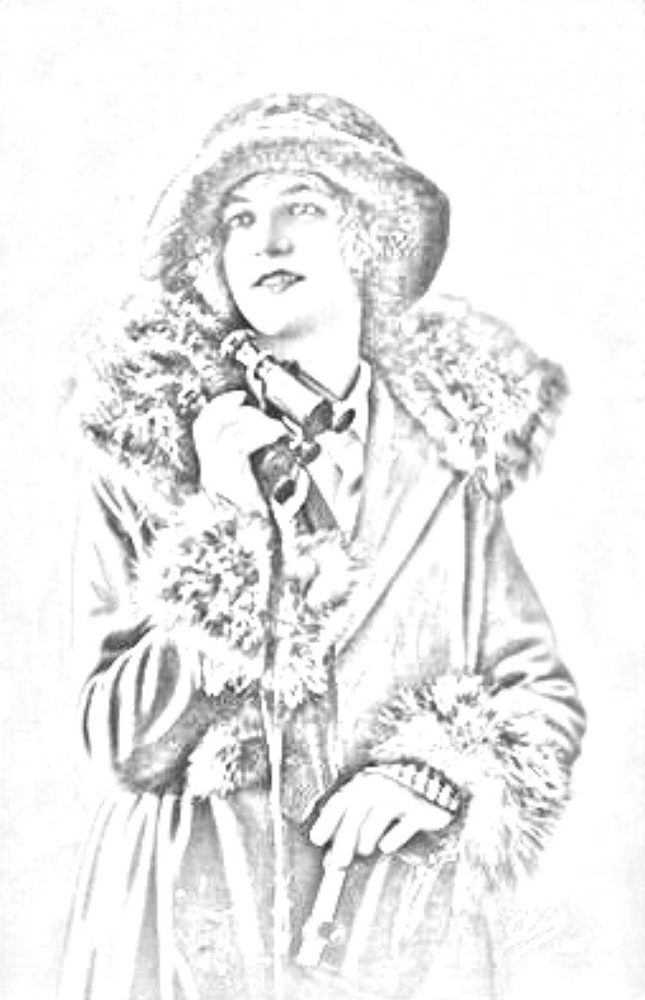

Filoginia - Antología escolar de escritoras hispánicas contemporáneas
Delmira Agustini
Retrato de Delmira Agustini
Javier García. Retrato de Delmira Agustini(CC BY-SA)
Javier García. Retrato gráfico de Delmira Agustini(CC BY-SA)
Vivía con su madre María Murtfeldt, su padre Santiago Agustini y también un hermano llamado Antonio que era mayor que ella.
Ha vivido toda su vida en Uruguay, era una niña muy solitaria y no tenía amigos pero empezó con sus 10 años de edad a empezar a escribir versos y estudió francés, clases de piano e incluso pintura y su primera obra fue poesía.
Fue asesinada por su ex marido y luego el se suicidó.
Su única afición era escribir poesía y no le dejaban hacer deportes u otras aficiones. Le gusta mucho la literatura.
No podía dar ninguna de sus opiniones por ser mujer.
Algunas de sus obras son Cantos de la mañana y Rosario de Eros.
Javier García. Lectura de Delmira Agustini, Poemas(CC BY-SA)
Introducción
Estamos ante la más grande de todas las poetisas uruguayas y una de las más notables del mundo. Solo María Eugenia Vaz Ferreira, en su genialidad poética y sobrenatural puede igualarse con este genio de las letras modernistas, ambas fueron contemporáneas y muy amigas.
La autora Delmira Agustini es una poetisa modernista que nació el 24 de octubre de 1886 aunque murió muy joven a manos de un hombre violento. Vivía con su madre María Murtfeldt, su padre Santiago Agustini y también un hermano llamado Antonio que era mayor que ella.
No tuvo una buena infancia y no pudo hacer muchas cosas por ser mujer. Ha vivido toda su vida en Uruguay, era una niña muy solitaria y no tenía amigos pero empezó con sus 10 años de edad a escribir versos, en esa época la llamaban “la nena”. Estudió francés, clases de piano e incluso pintura y su primera obra fue poesía.
Algunas de sus obras son Cantos de la mañana y Rosario de Eros.
Ella trata temas eróticos y usa la lírica ya que escribe poemas.
La vida o el camino de la vida, el cielo, el destino, el alma son algunas ideas de los poemas anteriores.
Fue asesinada por su ex marido y luego él se suicidó. Uruguay es un país muy avanzado socialmente, donde se permitía el divorcio a la mujer desde 1913 “por propia voluntad”. Delmira quiso rectificar el error de su boda divorciándose, pero no pudo escapar de la obsesión posesiva y la venganza contra una mujer libre.
¡VIDA!
A ti vengo en mis horas de sed como á una fuente
Límpida, fresca, mansa, colosal...
Y las punzantes sierpes de fuego mueren siempre
En la corriente blanda y poderosa.
Vengo a ti en mi cansancio, como al umbroso bosque
En cuyos terciopelos profundos la Fatiga
Se aduerme dulcemente, con música de brisas,
De pájaros y aguas...
Y del umbroso bosque salgo siempre radiante
Y despierta como un amanecer.
Vengo a ti en mis heridas, como al vaso de bálsamos
En que el Dolor se embriaga hasta morir de olvido...
Y llevo
Selladas mis heridas como las bocas muertas,
Y por tus buenas manos vendadas de delicias.
Cuando el frío me ciñe doloroso sudario,
Lívida vengo a tí,
Como al rincón dorado del hogar,
¡Como al Hogar universal del Sol!...
Y vuelvo toda en rosas como una primavera,
Arropada en tu fuego.
A ti vengo en mí orgullo,
Como a la torre dúctil,
Como a la torre única
¡Que me izará sobre las cosas todas!
Sobre la cumbre misma,
Arriscada y creciente,
¡De mi eterno Capricho!
Para mi vida hambrienta,
Eres la presa única,
Eres la presa eterna!
El olor de tu sangre,
El color de tu sangre
Florecen en los picos ávidos de mis águilas.
Vengo a ti en mi deseo,
Como en mil devorantes abismos, toda abierta
El alma incontenible...
¡Y me lo ofreces todo!...
Los mares misteriosos florecidos en mundos,
Los cielos misteriosos florecidos en astros,
¡Los astros y los mundos!...
Y las constelaciones de espíritus suspensas
Entre mundos y astros...
...Y los sueños que viven más allá de los astros,
Más acá de los mundos...
¿Cómo dejarte —¡Vida!—,
Cómo salir del dulce corazón
Hospitalario y pródigo,
Como una patria fértil?...
Si para mí la tierra,
Si para mí el espacio,
¡Todos! son los que abarca
¡El horizonte puro de tus brazos!...
Si para mí tu más allá es la Muerte,
¡Sencillamente, prodigiosamente!...
UN ALMA
Bajo los grandes cielos
Afelpados de sombras o dorados de soles,
Arropada en el manto
Pálido y torrencial de mi melancolía,
Con una astral indiferencia miro
Pasar las intemperies...
Ceños
De los reconcentrados horizontes;
Aletazos de fuego del relámpago;
Deshielo de las nubes;
Fantásticos tropeles
Desmelenados de los huracanes;
Pórticos esmaltados de los iris,
Abiertos a las fúlgidas bonanzas:
¡Pasad!... Yo miro indiferente y fija,
¡Indiferente y fija como un astro!
EL NUDO
Su idilio fue una larga sonrisa a cuatro labios...
En el regazo cálido de rubia primavera
Amáronse talmente que entre sus dedos sabios
Palpitó la divina forma de la Quimera.
En los palacios fúlgidos de las tardes en calma
Hablábanse un lenguaje sentido como un lloro,
¡Y se besaban hondo hasta morderse el alma!...
Las horas deshojáronse como flores de oro,
Y el Destino interpuso sus dos manos heladas...
¡Ah! Los cuerpos cedieron, mas las almas trenzadas
Son el más intrincado nudo que nunca fue...
En lucha con sus locos enredos sobrehumanos
Las Furias de la vida se rompieron las manos
Y fatigó sus dedos supremos Ananké...
Conclusión
Pienso que representa su mentalidad a través de sus ideas ya que hay que ser valiente para poder hablar sobre esos temas que habla a pesar de ser mujer en aquella época donde la mujer estaba menospreciada.
En sus poemas no se puede observar a una persona que esté hablando sobre la desigualdad o el machismo que había en esa época, sino que trata temas que a ella le gustaban, supongo, ya que empezó a escribir con solo diez años. Pero creo que ella lo único que quería conseguir escribiendo era estar alejada de toda esa sociedad dejando de lado todos esos prejuicios que había en esa época.